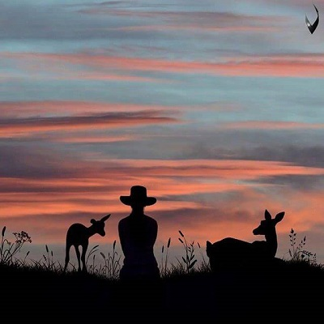
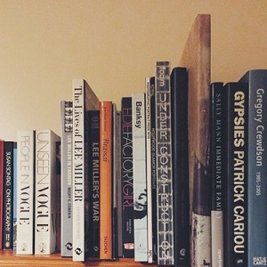

INI AKU
Hello
My Name
PENDIDIKAN
Aku lulusan TK Negeri Pembina Cirebon pada tahun 2007. Lalu aku melanjutkan sekolahku di SDN Sindang Barang 2 Bogor. Setelah mengenyam SD selama 6 tahun, aku melajutkan sekolahku di SMP IT Al-Yasmin Bogor. 3 tahun lamanya, setelah itu aku melanjutkan ke tingkat paling tinggi yaitu di SMK - SMAK Bogor. Betapa beruntungnya aku bisa menjadi salah satu bagian dari keluarga besar SMAKBO
HOBIKU
- Membaca Novel
- Menonton Film
- Membaca Webtoon
- Mendengarkan Musik

Pada awal masuk SMP, aku diperkenalkan oleh temanku apa itu Wattpad. Setelah aku cari tahu dan akhirnya aku kecanduan membaca novel lewat aplikasi tersebut. Kemudian, novel-novel dari Wattpad biasanya dijadikan buku novel yang diterbitkan oleh si penulis tersebut. Karena novel sudah dijadikan buku, biasanya cerita yang ada di Wattpad akan dihapus, dan mau tidak mau kita harus membelinya agar kita tahu isi novel itu. Sejak saat itu aku membeli novel dan membaca, setelahnya aku lebih suka membaca novel yang dijadikan buku. Aku sangat suka novel yang bergenre Teen Fiction. Saat membaca novel imajinasiku berkembang dan membuat pikiranku lebih tenang sejenak.

Hobiku yang kedua adalah menonton film. Menurutku menonton film terkadang suka muncul ide atau inspirasi. Banyak kisah yang diangkat menjadi sebuah film yang menarik dan disenangi oleh masyarakat baik dari segi cerita, kisah nyata, persahabatan, cinta, dll. Aku sangat suka film yang bergenre horor. Aku dan Ibuku senang sekali menonton film horor berdua di bioskop. Nonton film horor menurutku seru ada tantangannya begitu. Aku takut memang kalau melihat hantunya, tetapi entah malah jadi ketagihan nonton horor lagi. Film horor yang aku sukai adalah The Conjuring, karena film tersebut merupakan kisah nyata yang dialami oleh sebuah keluarga yang kasusnya ditangani oleh Ed dan Lorraine.
Nah, kali ini hobiku adalah membaca webtoon. Hobiku ini belum lama, aku mulai menyukai baca Webtoon saat duduk dikelas 10. Awalnya temanku suka sekali membaca Webtoon, sampai-sampai tiap hari aku perhatikan dia selalu membacanya. Awalnya aku tidak tertarik membaca komik di Webtoon dikarenakan aku bingung harus baca percakapannya dari mana, dari kanan kah atau dari kiri kah dan itu membuatku pusing sendiri. Lalu, lama-kelamaan aku iseng mendownload aplikasinya, dan iseng-iseng juga baca komik di Webtoon. Akhirnya menjadi candu, dan aku pun suka membacanya. Banyak sekali genrenya mulai dari romantis, komedi, drama, fantasi, horor, dll. Tetapi aku lebih suka romantis dan komedi.
Musik itu memiliki genre yang bermacam-macam seperti pop, rock, klasik, metal, pop rock, religi, dll. Semua genre musik tersebut bisa didengarkan tergantung suasana hati atau musik kesukaan kita. Aku sangat senang mendengarkan musik dimanapun dan kapanpun, karena mendengarkan musik adalah hal yang paling menyenangkan untuk dilakukan. Aku merasa tenang dan damai saat mendengar musik. Logikanya apa yang kita dengarkan, secara tak langsung dapat mempengaruhi diri kita. Mendengarkan musik menurutku, bisa menjadi alternatif untuk menghilangkan stress atau kejenuhan. Dengan musik suasana hari-hari bisa lebih berwarna. Semua orang pasti suka musik dan tergantung genre apa yang disukai.
Penggunaan Social Media
Photo
Status
Tweet
Family
Friends
Best Friends
Jobs
KESUKAAN
 

DISINI SEKOLAHKU
Phone: 0251-8323138
smakbo.sch.id
Swing by for a cup of , or leave me a note: